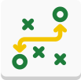
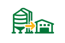
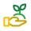

GEAGRO CEREALES
Software de gestión agrícola para ordenar cada campaña
Un software agrícola pensado para productores y equipos técnicos que necesitan planificar, ejecutar y controlar cada campaña, organizando la información de sus lotes, insumos y labores para tomar mejores decisiones productivas.

Qué incluye
Software agrícola para la gestión de campos, lotes y campañas
-

Gestión de campos y lotes
Organización completa de la superficie productiva, cultivos y campañas.
-

Planificación de campañas agrícolas
Definición de cultivos, labores y seguimiento del ciclo productivo.
-

Gestión de insumos
Control de stock, consumo y costos de semillas, fertilizantes y fitosanitarios.
-

Registro de labores y operaciones
Seguimiento de siembra, fertilización, pulverización y cosecha.
-

Control de costos productivos
Análisis de inversión por lote y comparación entre costo estimado y real.
-

Órdenes de trabajo
Generación y seguimiento de tareas en campo.
-

Indicadores y gráficos productivos
Visualización de rendimiento, costos y evolución de la campaña.
-

Logística y transporte
Registro y control de movimientos vinculados a la producción.
-

Gestión de acopio
Control del grano almacenado, stock disponible y movimientos, en silos propios y en acopiadores externos.
Acopio
Controlá dónde está tu producción y cuánto grano tenés disponible.
Toda la trazabilidad del grano en un mismo sistema.
Acopio propio
- Silos propiosGestión de la capacidad y ubicación de los silos.
- Stock por especie y campañaStock disponible por cultivo y campaña.
- Ingresos y salidasRegistro de movimientos de entrada y salida de grano.
- Transferencias entre silosMovimientos internos de grano entre silos propios.
- Calidad del granoRegistro y control de parámetros de calidad por lote.

Acopio en terceros- Acopiadores externosRegistro de acopiadores y vinculación de la producción.
- Certificados de depósitoGestión de certificados y control de lo almacenado.
- Stock disponibleStock por especie, campaña y acopiador.
- Servicios realizadosRegistro de servicios como secada y limpieza.
- Retiros y movimientosControl de retiros y movimientos del grano almacenado.
Producción y economía
Gestión productiva y económica en un solo sistema
Producción agrícola
Organizá cultivos, lotes y labores en un entorno unificado. Registrá cada actividad y seguí el estado de la campaña en tiempo real.
Control económico
Analizá costos por lote, compará inversión estimada contra real e insumos necesarios contra comprados, y evaluá el rendimiento de cada campaña para mejorar las próximas.
Cómo funciona
Ordená tu campaña. Controlá cada etapa.
Integrando cada etapa eliminás desorden, reducís errores y obtenés una visión clara de tu producción.
-
01
Planificación de campaña
-

02Asignación de operaciones
-
03
Compra de insumos
-
04
Ejecución de campaña
-
05
Análisis y estadística de resultados
Demo de GEAGRO CEREALES
Te mostramos GEAGRO CEREALES con tus propios lotes.
Coordinamos una demo para conocer tu campaña y mostrarte cómo planificar, ejecutar y controlar cada etapa.
Preguntas frecuentes
Sobre GEAGRO CEREALES.
¿Tenés otra duda? Escribinos por WhatsApp o dejanos tus datos en el formulario de demo.
¿Qué puedo planificar con GEAGRO CEREALES?
Cultivos, labores e insumos de cada campaña, por lote. A partir de esa planificación generás órdenes de trabajo y seguís el ciclo productivo hasta la cosecha.
¿Cómo controla los insumos?
Llevás el stock, el consumo y el costo de semillas, fertilizantes y fitosanitarios, y comparás los insumos necesarios con los comprados.
¿Puedo ver el costo por lote?
Sí. Analizás la inversión por lote y comparás el costo estimado con el real, junto con el rendimiento de la campaña.
¿Sirve si guardo grano en acopiadores?
Sí. Además de tus silos propios, registrás acopiadores externos, certificados de depósito, servicios realizados, stock disponible y retiros.
¿Registra el transporte de la producción?
Sí, el módulo de logística y transporte registra y controla los movimientos vinculados a la producción.
¿Cómo pido una demo?
Completá el formulario de esta página o escribinos por WhatsApp. Te contactamos para conocer tu producción y coordinar la presentación. Los planes y precios están en la página principal de GEAGRO.
Brochure
Llevate toda la información
Módulos, funcionalidades y paneles de GEAGRO CEREALES, para compartir con tu equipo técnico.
Descargar brochureDemo
Solicitá tu demo de GEAGRO CEREALES
Completá tus datos y te contactamos para coordinar una presentación.